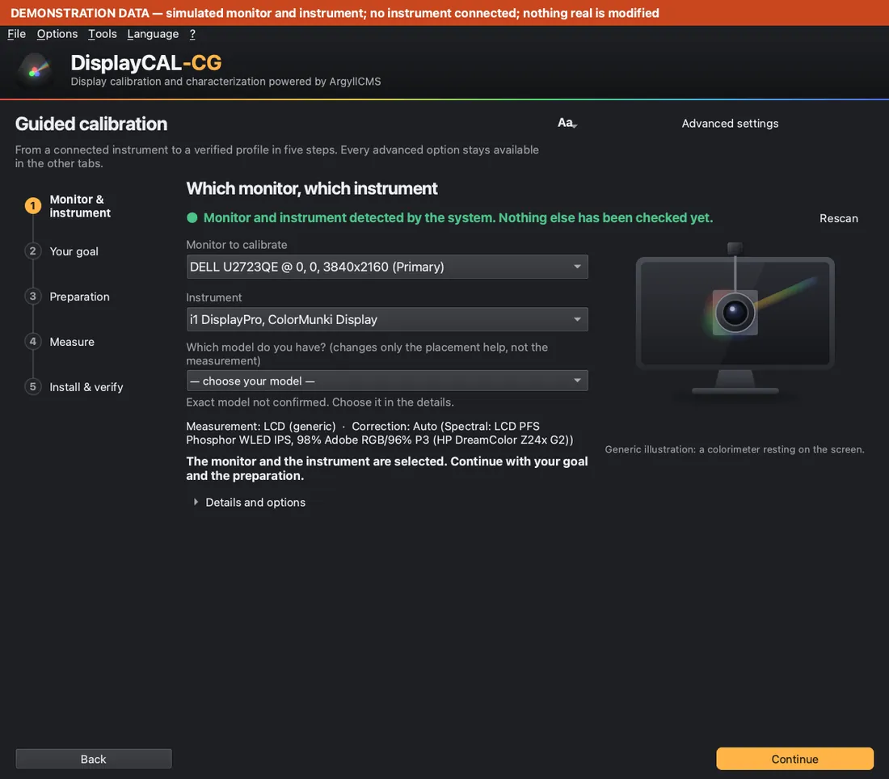
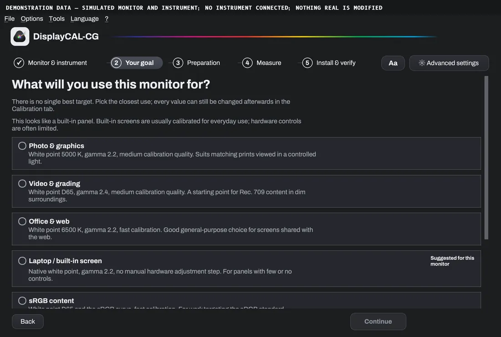
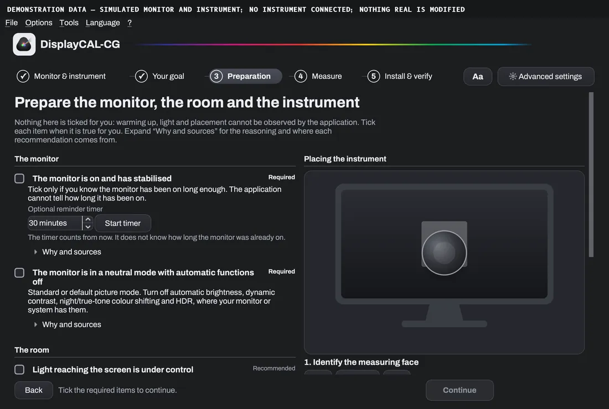
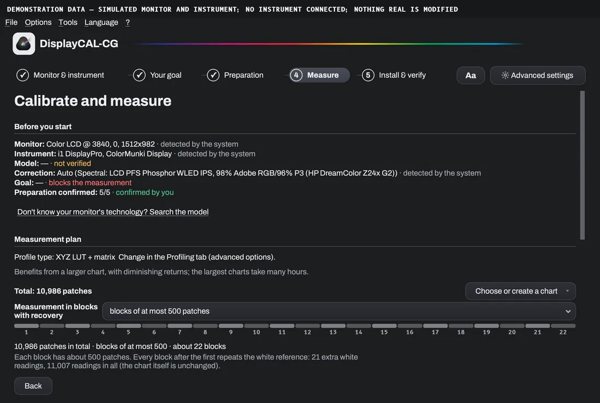
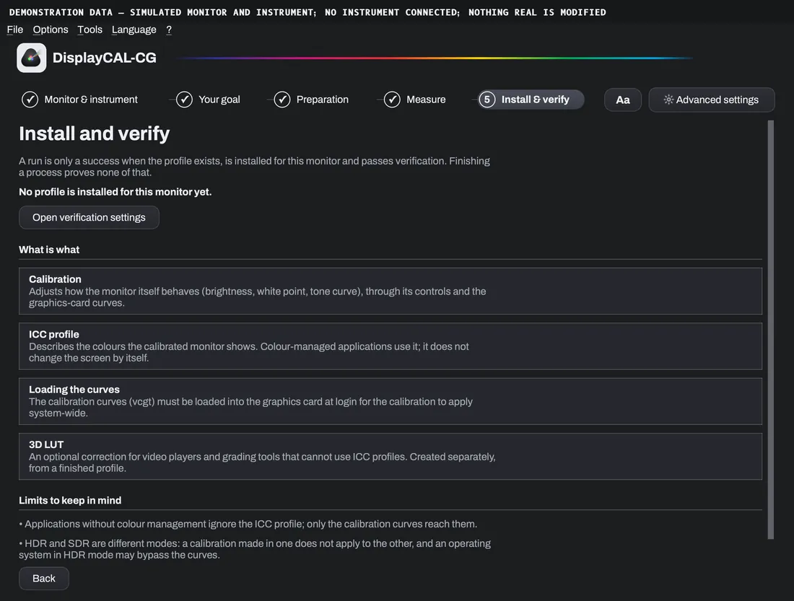
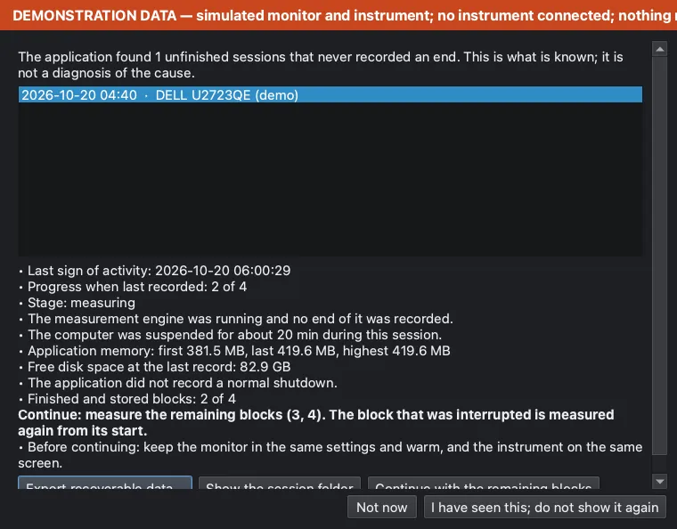
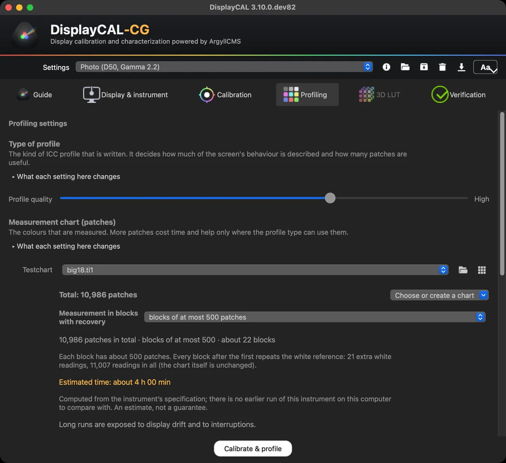
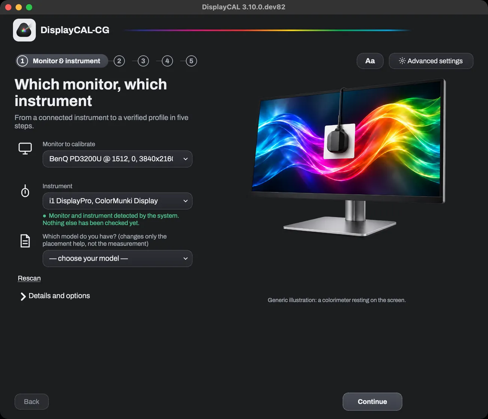
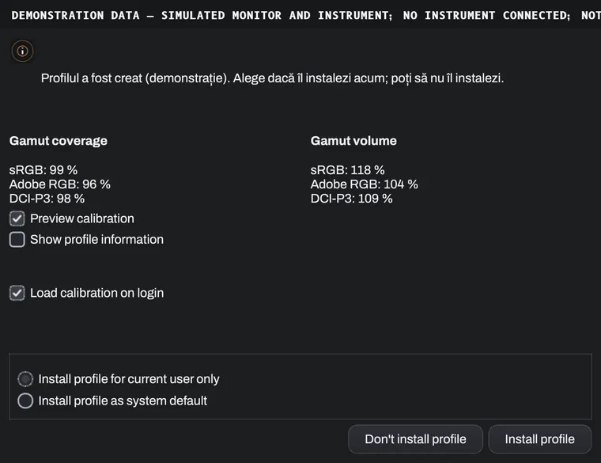

Monitor calibration and profiling
Colour you can trust, one step at a time.
DisplayCAL-CG takes you from the probe to a verified ICC profile: what to prepare, how to place the instrument, how long it takes, and what happens if something stops. On top of the free, open ArgyllCMS engine.
- 100% free
- GPLv3, no trial or activation
- ArgyllCMS included and verified
- RO · EN · ES
- macOS · Windows
Version 3.10.0.dev82 (cg.6) · Apple Silicon for macOS, x64 for Windows

What it does and who it is for
The application measures how your screen shows colour and writes an ICC profile that the system and your programs use for correct colour. It is for photographers, colourists, designers and anyone who needs a monitor to look the same from one day to the next and from one program to another.
What you need
A colorimeter or spectrophotometer supported by ArgyllCMS (for example from the i1Display, ColorMunki or Spyder families). Without a physical instrument nothing can be measured: the application does not simulate measurements.
You confirm the exact model when several products share one USB identity; the application does not guess.
The guided flow, in five steps
Each step says what was detected and what you confirmed, and blocks measuring only for reasons it explains. Every advanced option stays in the other tabs.





See what the system detected. If the model cannot be deduced, you pick it.
Photo, video, office or “keep my current settings”. Each goal loads a preset you can change afterwards.
A sourced checklist: warmed-up monitor, neutral mode, room light, instrument connected, no disturbance. Nothing is ticked for you.
The plan before you start: profile type, number of patches, blocks, estimated time, sleep prevention.
The profile is installed only once a valid one exists; then the application reads back the active profile and says whether it is the one just created.
DEMODemonstration captures: simulated monitor and instrument, no probe connected, no real measurement. The band at the top of each image says the same.
Preparation and probe placement
Most measurement errors come from preparation. The application guides you, but it cannot observe room light or how long the monitor has been on: you confirm those.
- Monitor on and warmed up (the 30-minute recommendation appears only for instruments where the maker gives one).
- A neutral picture mode, with automatic brightness, dynamic contrast and colour filters off.
- Room light under control: no lamp or window shining or reflecting on the screen.
- Instrument connected straight to the computer, not through a hub.
- A correction suited to the kind of screen; the application never picks one for you.
How to place the instrument
- Identify the measuring faceThe side with the lens or optics is the one that rests on the screen. Check your instrument's own instructions if unsure.
- Rest it on the screenRest the sensor flat on the screen with the measuring face on the glass. Do not press on the panel.
- Centre it on the measurement areaCentre it on the measurement area the application shows and keep it still for the whole run.
Generic schematic, not a product photo. These general steps do not replace your instrument maker's document.
Calibration, ICC profile, verification, 3D LUT
Four different things, in this natural order; the 3D LUT is optional:
- 1
Calibration
Brings the monitor to a target (white point, luminance, tone curve) through its own controls and the graphics card curves. It produces calibration curves, not a profile.
- 2
ICC profiling
Measures how the calibrated screen shows colour and writes the ICC profile. The profile type is how the measurements are described to applications.
- 3
Verification
Measures again and compares with what the profile predicts. It shows a deviation, not a guarantee: the limits are explained in the guide.
- 4
3D LUT
A table used by the one application or device that loads it (for example a grading or playback tool), independent of how other programs read the ICC profile.
The measurement plan, before you start
Three separate numbers, so they are not confused: the total patches in the chart, the largest block and the number of blocks. The block size never changes the total; it only decides how the same chart is cut.
- Total
- How many patches the chosen or created chart has. The application sets no fixed limit; charts of more than 10,000 patches have been created and split into blocks in tests.
- Blocks
- A long run can be cut into blocks saved to disk as they finish. Every block after the first repeats the white reference; the extra readings are shown separately.
- Estimated time
- From the speed measured on this computer when there is a history, otherwise from the instrument's specification, and the application says which. An estimate, not a guarantee.
- More patches is not automatically better
- It helps where the profile type can use it (LUT types above all), costs time and lets the display drift. Verify the result after profiling.
If a run stops
The application keeps a session journal. At the next start it shows what was kept and offers to export, open the folder or continue with the remaining blocks, only if the monitor, instrument, mode, correction and profile type are the same. A run measured as one piece cannot be recovered if interrupted: that is why blocks are recommended for long runs.


Advanced mode, same configuration
Every control stays in the tabs, grouped by the decision you are taking (profile type, chart, how the measurement behaves…), with “What each setting here changes” for each group. Guided and advanced share one configuration: what you change in one shows in the other.
Larger, readable text
The “Aa” button changes the text size across the whole application at once (Normal, Large, Very large), starting from your system's size. It never touches the measurement window, the patch size or colours.
On both platforms


With no instrument connected the application plainly says “No instrument was detected” and blocks measuring; it does not invent data.

What we verified and what we did not
State at version 3.10.0.dev82 (cg.6). What is not in the verified column is not promised.
Verified
- The macOS installers (.pkg and .dmg) are Developer ID signed, notarized and checked with spctl; the application starts.
- A clean install on Windows 11 (Parallels VM, ARM64 with x64 emulation): install, start, bundled ArgyllCMS, diagnostic export.
- A short real measurement (38 patches) with an i1Display colorimeter on an external monitor, on macOS: repeatability, splitting into blocks, stop and resume, cancel.
- Local diagnostic export, never sent automatically, on macOS and Windows.
Not verified
- Sessions of several hours (say 4–8 hours) have not been validated yet. Measuring in blocks saves finished blocks locally, but it does not guarantee stability, accuracy or recovery in every condition.
- Unplugging the probe during a measurement, and recovering after a power cut or sleep, have not been verified with a real instrument.
- Instruments other than the one tested rely on ArgyllCMS support; we did not verify them ourselves.
- Windows on native x64 hardware and macOS on Intel processors: not verified (the macOS package is for Apple Silicon).
- The Windows installer is not yet signed with a paid certificate: SmartScreen may warn. Download it only from the official pages.
- The Romanian and Spanish translations have not been reviewed by native speakers.
Free and open source
DisplayCAL-CG is 100% free: no trial, no activation, no paid features. It is an edition maintained by Cristi Gordaș, on the same code and the same GPLv3 licence as the original project. The application may show the original project's optional support message; you can close it and tick “Do not show again”.
Credits
- DisplayCAL — Florian Höch, the original author.
- displaycal-py3 — the community continuation (the Python 3 port).
- ArgyllCMS — Graeme Gill, the measurement and profile engine.
- DisplayCAL-CG — adaptations, guided interface and installers: Cristi Gordaș.
Source, documentation, issues, contributions
- Source code
- Releases and downloads
- Report a problem
- Original project documentation
- What comes from the original project
- The full guide (PDF)
If it helped you, a star on GitHub helps the project get found.

Install, update, uninstall
macOS: open the .dmg or .pkg, accept the licence and install; the application and its tools land in Applications.
Windows: run DisplayCAL-CG-Setup.exe, accept the licence and follow the steps. If SmartScreen appears: More info → Run anyway, only for the file downloaded from the official pages.
The installer includes ArgyllCMS, verified against a fixed SHA-256 hash; if a download is ever needed, a file that does not match is refused.
Update: “Check for updates” in the application; with your consent it downloads and installs the new version (macOS asks for the administrator password in the system window).
Uninstall: on Windows from Settings → Apps; on macOS move the application and its tools from Applications to the Bin. Data stays in the application's folders (preferences, logs, sessions) until you delete it.
Diagnostics and support
The application keeps rotating logs locally and can build a diagnostic package, redacted by default, in a place you choose. It sends nothing automatically: you decide whether to attach it to a reported problem.